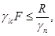

СИСТЕМА НОРМАТИВНЫХ ДОКУМЕНТОВ В СТРОИТЕЛЬСТВЕ
СТРОИТЕЛЬНЫЕ НОРМЫ И ПРАВИЛА РОССИЙСКОЙ ФЕДЕРАЦИИ
ГИДРОТЕХНИЧЕСКИЕ
СООРУЖЕНИЯ
ОСНОВНЫЕ ПОЛОЖЕНИЯ
СНиП 33-01-2003
ГОСУДАРСТВЕННЫЙ
КОМИТЕТ РОССИЙСКОЙ ФЕДЕРАЦИИ
ПО СТРОИТЕЛЬСТВУ И ЖИЛИЩНО-КОММУНАЛЬНОМУ КОМПЛЕКСУ
(ГОССТРОЙ РОССИИ)
Москва 2004
ПРЕДИСЛОВИЕ
1 РАЗРАБОТАНЫ ОАО «ВНИИГ им. Б.Е. Веденеева» с участием ОАО «Институт Гидропроект», ОАО «Ленгидропроект», ОАО «НИИЭС», НТЦ «Энергонадзора», ООО «Гидроспецпроект», ОАО «Институт Теплоэлектропроект», ОАО «Ленморниипроект», ИНПЦ «Союзводпроект», ОАО «Гипроречтранс», ФГУП СПб. «Атомэнергопроект», ФГУП «Центральный НИИ технологии судостроения», ФГУП «Госэкомелиовод», СПб ГПУ, МГСУ
2 ВНЕСЕНЫ Управлением технического нормирования, стандартизации и сертификации в строительстве и ЖКХ Госстроя России
3 ПРИНЯТЫ И ВВЕДЕНЫ В ДЕЙСТВИЕ постановлением Госстроя России от 30 июня 2003 г. № 137
4 ВЗАМЕН СНиП 2.06.01-86
СОДЕРЖАНИЕ
СНиП 33-01-2003
СТРОИТЕЛЬНЫЕ НОРМЫ И ПРАВИЛА РОССИЙСКОЙ ФЕДЕРАЦИИ
ГИДРОТЕХНИЧЕСКИЕ СООРУЖЕНИЯ
Основные положения
Hydraulic engineering constructions.
Basic principles of designing
Дата введения 2004-01-01
Настоящие нормы и правила распространяются на вновь строящиеся и реконструируемые речные и морские гидротехнические сооружения всех видов и классов.
В настоящих нормах и правилах приведены ссылки на следующие нормативные документы:
СНиП 2.01.07-85* Нагрузки и воздействия
СП 33-101-2003 Определение основных расчетных гидрологических характеристик
СНиП 2.05.03-84* Мосты и трубы
СНиП 2.06.07-87 Подпорные стены, судоходные шлюзы, рыбопропускные и рыбозащитные сооружения
СНиП 2.06.15-85 Инженерная защита территории от затопления и подтопления
СНиП II-7-81* Строительство в сейсмических районах
ГОСТ 19185-73 Гидротехника. Основные понятия. Термины и определения
ГОСТ 26775-97 Габариты подмостовые судоходных пролетов мостов на внутренних водных путях
В настоящем документе использованы термины, приведенные ниже, а также в ГОСТ 19185:
гидротехнические сооружения: Сооружения, подвергающиеся воздействию водной среды, предназначенные для использования и охраны водных ресурсов, предотвращения вредного воздействия вод, в том числе загрязненных жидкими отходами, включая плотины, здания гидроэлектростанций, водосбросные, водоспускные и водовыпускные сооружения, туннели, каналы, насосные станции, судоходные шлюзы, судоподъемники; сооружения, предназначенные для защиты от наводнений и разрушений берегов водохранилищ, берегов и дна русел рек; сооружения (дамбы), ограждающие золошлакоотвалы и хранилища жидких отходов промышленных и сельскохозяйственных организаций; устройства от размывов на каналах, сооружения морских нефтегазопромыслов и т.п.;
чрезвычайная ситуация: Обстановка на определенной территории, сложившаяся в результате аварии гидротехнического сооружения, которая может повлечь или повлекла за собой человеческие жертвы, ущерб здоровью людей или ущерб окружающей природной среде, значительные материальные потери и нарушение условий жизнедеятельности людей;
безопасность гидротехнического сооружения: Свойство гидротехнического сооружения, позволяющее обеспечивать защиту жизни, здоровья и законных интересов людей, окружающей среды и хозяйственных объектов;
декларация безопасности гидротехнического сооружения: Документ, в котором обосновывается безопасность гидротехнического сооружения и определяются меры по обеспечению безопасности гидротехнического сооружения с учетом его класса;
критерии безопасности гидротехнического сооружения: Предельные значения количественных и качественных показателей состояния гидротехнического сооружения и условий его эксплуатации, соответствующие допустимому уровню риска аварии гидротехнического сооружения и утвержденные в установленном порядке Федеральными органами исполнительной власти, осуществляющими государственный надзор за безопасностью гидротехнических сооружений;
оценка безопасности гидротехнического сооружения: Определение соответствия состояния гидротехнического сооружения и квалификации работников эксплуатирующей организации нормам и правилам, утвержденным в порядке, определенном Федеральным законом «О безопасности гидротехнических сооружений»;
обеспечение безопасности гидротехнического сооружения: Разработка и осуществление мер по предупреждению аварий гидротехнического сооружения;
допустимый уровень риска аварии гидротехнического сооружения: Значение риска аварии гидротехнического сооружения, установленное нормативными документами;
эксплуатирующая организация: Государственное или муниципальное унитарное предприятие либо организация любой другой организационно-правовой формы, на балансе которой находится гидротехническое сооружение.
4.1.1 Порядок разработки, согласования, утверждения и состав проектной документации на строительство гидротехнических сооружений должны отвечать установленным требованиям.
4.1.2 Гидротехнические сооружения подразделяют на постоянные и временные.
К временным относятся сооружения, используемые только в период строительства и ремонта постоянных сооружений.
4.1.3 Постоянные гидротехнические сооружения (приложение А) в зависимости от их назначения подразделяют на основные и второстепенные.
К основным следует относить гидротехнические сооружения, повреждение или разрушение которых приводит к нарушению или прекращению нормальной работы электростанций; прекращению или уменьшению подачи воды для водоснабжения и орошения; затоплению и подтоплению защищаемой территории; прекращению или сокращению судоходства, деятельности речного и морского портов, судостроительных и судоремонтных предприятий; может привести к прекращению добычи или к выбросу нефти и газа из морских скважин, хранилищ, трубопроводов.
К второстепенным следует относить гидротехнические сооружения, разрушение или повреждение которых не влечет за собой указанных последствий.
4.1.4 Гидротехнические сооружения следует проектировать, исходя, как правило, из требований комплексного использования водных ресурсов, схем использования водотоков, с учетом данных и положений, содержащихся в федеральных, региональных и отраслевых программах совершенствования структуры хозяйства, развития и размещения производственных сил и промышленных объектов, градостроительной документации и иных обязательных для использования материалов.
4.1.5 Типы сооружений, их параметры и компоновку следует выбирать на основании сравнения технико-экономических показателей вариантов и с учетом:
функционального назначения сооружений;
места возведения сооружений, природных условий района (топографических, гидрологических, климатических, инженерно-геологических, гидрогеологических, геокриологических, сейсмических, биологических и др.);
условий и методов производства работ, наличия трудовых ресурсов;
развития и размещения отраслей хозяйства, в том числе развития энергопотребления, изменения и развития транспортных потоков и роста грузооборота, развития объектов орошения и осушения, обводнения, водоснабжения, судостроения и судоремонта, комплексного освоения участков морских побережий, включая разработку месторождений нефти и газа на шельфе;
водохозяйственного прогноза изменения гидрологического, в том числе ледового и термического, режима рек в верхнем и нижнем бьефах; заиления наносами и переформирования русла и берегов рек, водохранилищ и морей; затопления и подтопления территорий и инженерной защиты расположенных на них зданий и сооружений;
воздействия на окружающую среду;
влияния строительства и эксплуатации объекта на социальные условия и здоровье населения;
изменения условий и задач судоходства, лесосплава, рыбного хозяйства, водоснабжения и режима работы мелиоративных систем;
установленного режима природопользования (сельхозугодья, заповедники и т.п.);
условий быта и отдыха населения (пляжи, курортно-санаторные зоны и т.п.);
мероприятий, обеспечивающих требуемое качество воды: подготовки ложа водохранилища, соблюдения надлежащего санитарного режима в водоохранной зоне, ограничения поступления биогенных элементов (азотосодержащих веществ, фосфора и др.) с обеспечением их количества в воде не выше предельно допустимых концентраций (ПДК);
условий постоянной и временной эксплуатации сооружений;
требований экономного расходования основных строительных материалов;
изменения термического режима и криогенного строения грунтов в районах распространения многолетнемерзлых грунтов;
возможности разработки полезных ископаемых, местных строительных материалов и т.п.;
технологии разработки нефтегазопромысловых месторождений в акватории морских шельфов, сбора, хранения и транспортировки нефти и газа; технологии демонтажа конструкций при завершении эксплуатации и ликвидации промысла;
обеспечения эстетических и архитектурных требований к сооружениям, расположенным на берегах водотоков, водоемов и морей.
4.1.6 При проектировании гидротехнических сооружений надлежит обеспечивать и предусматривать:
надежность сооружений на всех стадиях их строительства и эксплуатации;
максимальную экономическую эффективность строительства;
постоянный инструментальный и визуальный контроль за состоянием гидротехнического сооружения и вмещающего массива горных пород, а также природными и техногенными воздействиями на них;
подготовку ложа водохранилища и хранилищ жидких отходов промышленных предприятий и прилегающей территории;
охрану месторождений полезных ископаемых;
необходимые условия судоходства;
сохранность животного и растительного мира, в частности, организацию рыбоохранных мероприятий;
минимально необходимые расходы воды, а также благоприятный уровенный и скоростной режимы в бьефах с учетом интересов водопотребителей и водопользователей, а также благоприятный режим уровня грунтовых вод для освоенных земель и природных экосистем.
4.1.7 При проектировании гидротехнических сооружений надлежит рассматривать возможность и технико-экономическую целесообразность:
совмещения сооружений, выполняющих различные эксплуатационные функции;
возведения сооружений и ввода их в эксплуатацию отдельными пусковыми комплексами;
унификации компоновки оборудования, конструкций и их размеров и методов производства строительно-монтажных работ;
использования напора, создаваемого на гидроузлах транспортного, мелиоративного, рыбохозяйственного и другого назначения, для целей энергетики.
4.1.8 При проектировании гидротехнических сооружений в районах распространения многолетнемерзлых грунтов следует учитывать возможные изменения физико-механических, теплофизических и фильтрационных свойств пород оснований и материалов сооружений при их переходе из мерзлого состояния в талое и наоборот, а также размеры и скорость осадки сооружения в процессе оттаивания основания.
4.1.9 При проектировании гидротехнических сооружений на скальных грунтах и внутри скального массива необходимо учитывать структуру скального массива, его обводненность, газоносность и естественное напряженное состояние.
4.2.1 Реконструкцию постоянных гидротехнических сооружений следует производить для:
усиления основных гидротехнических сооружений и их оснований при повышении риска аварии из-за старения сооружений и оснований или увеличения внешних воздействий, а также в случае увеличения масштаба экономических, экологических и социальных последствий возможной аварии;
обеспечения (повышения) водопропускной способности основных гидротехнических сооружений;
увеличения выработки электроэнергии;
увеличения вместимости хранилищ жидких отходов;
замены оборудования в связи с его износом;
повышения водообеспечения оросительных систем, улучшения режима грунтовых вод на орошаемых или осушаемых массивах и прилегающих к ним территориях, вдоль трасс каналов;
увеличения грузо- и судопропускной способности портов и судоходных сооружений;
интенсификации работы стапельных и подъемно-спусковых сооружений;
улучшения экологических условий зоны влияния гидроузла.
Реконструкция гидротехнического сооружения должна производиться также при изменении нормативных требований, в случае изменения условий эксплуатации (повышение сейсмичности района, изменение расчетного сбросного расхода, работа сооружения в комплексе с вновь построенными объектами и т.п.).
При реконструкции следует предусматривать максимальное использование существующих элементов сооружений, находящихся в нормальном эксплуатационном состоянии.
4.2.2 Реконструкцию основных сооружений следует производить, как правило, без прекращения выполнения ими основных эксплуатационных функций.
4.2.3 При реконструкции следует предусматривать максимальное использование существующих сооружений.
4.2.4 Техническое состояние реконструируемых сооружений и их элементов следует определять специальными исследованиями и расчетами на основе фактических характеристик строительных материалов и грунтов основания, принятых для проектов реконструкции.
4.3.1. При разработке проекта гидротехнических сооружений следует руководствоваться законодательством Российской Федерации о безопасности гидротехнических сооружений и нормативными требованиями, направленными на обеспечение безопасности гидротехнических сооружений.
4.3.2 В составе проекта гидротехнических сооружений следует разрабатывать специальный проект натурных наблюдений за их работой и состоянием как в процессе строительства, так и при эксплуатации для своевременного выявления дефектов и неблагоприятных процессов, назначения ремонтных мероприятий, предотвращения отказов и аварий, улучшения режимов эксплуатации и оценки уровня безопасности и риска аварий.
Проект натурных наблюдений должен включать:
- перечень контролируемых нагрузок и воздействий на сооружение;
- перечень контролируемых и диагностических показателей состояния сооружения и его основания, включая критерии безопасности;
- программу и состав инструментальных и визуальных наблюдений;
- технические условия и чертежи на установку контрольно-измерительной аппаратуры (КИА), спецификацию измерительных приборов и устройств;
- структурную схему и технические решения системы мониторинга состояния сооружений, природных и техногенных воздействий на них, включая состав ее основных технических и программных средств, определяемый по таблице Ж.1 приложения Ж;
- инструктивные документы и методические рекомендации по проведению натурных наблюдений за работой и состоянием сооружений.
4.3.3 В составе проекта гидротехнических сооружений должны быть разработаны критерии их безопасности.
Перед вводом в эксплуатацию и в процессе эксплуатации гидротехнических сооружений критерии безопасности должны уточняться на основе результатов натурных наблюдений за состоянием сооружений, нагрузок и воздействий, а также изменений характеристик материалов сооружений и оснований, конструктивных решений.
4.3.4 В соответствии с действующим законодательством гидротехнические сооружения, повреждения которых могут привести к возникновению чрезвычайных ситуаций, на всех стадиях их создания и эксплуатации подлежат декларированию безопасности.
Декларация безопасности является обязательной частью проекта, она подлежит утверждению в органах надзора за безопасностью гидротехнических сооружений при согласовании проекта.
Декларация безопасности подлежит корректировке:
- перед вводом объекта в эксплуатацию;
- после первых двух лет эксплуатации;
- не реже одного раза в каждые последующие пять лет эксплуатации;
- после реконструкции гидротехнических сооружений, их капитального ремонта, восстановления и изменения условий эксплуатации;
- при выводе из эксплуатации и при консервации;
- при изменении нормативных правовых актов, правил и норм в области безопасности гидротехнических сооружений;
- после аварийных ситуаций.
4.3.5 В проектах гидротехнических сооружений для локализации и ликвидации их возможных аварий должны предусматриваться технические решения по использованию в строительный и эксплуатационный периоды карьеров и резервов грунтов; производственных объектов, транспорта и оборудования базы строительства; мостов и подъездных путей в районе и на территории объекта; автономных или резервных источников электроэнергии и линий электропередачи; других противоаварийных средств оперативного действия.
4.3.6 При проектировании гидротехнических сооружений должны быть предусмотрены конструктивно-технологические решения по предотвращению развития возможных опасных повреждений и аварийных ситуаций, которые могут возникнуть в периоды строительства и эксплуатации.
4.3.7 В проектах гидротехнических сооружений должны выполняться расчеты по оценке возможных материальных и социальных ущербов от потенциальной аварии сооружения с нарушением напорного фронта.
Надлежит также предусматривать мероприятия по снижению негативных воздействий возможных аварий сооружений на окружающую среду.
4.3.8 В проектах водонапорных гидротехнических сооружений следует предусматривать локальные системы оповещения персонала и населения, проживающего в долине реки в нижнем бьефе гидротехнического сооружения, об угрозе прорыва напорного фронта.
4.4.1 При разработке проекта гидротехнических сооружений следует руководствоваться законодательством Российской Федерации об охране окружающей среды и нормативными документами, устанавливающими требования к охране природной среды при инженерной деятельности. Следует также рассматривать мероприятия, ведущие к улучшению экологической обстановки по сравнению с природной, использованию водохранилищ, нижних бьефов и примыкающих к ним территорий для развития туризма, обеспечения рекреации, рекультивации земель и вовлечения их в хозяйственную деятельность, не противоречащую оправданному природопользованию.
4.4.2 Мероприятия по охране окружающей среды следует проектировать комплексно на основе прогноза ее изменения в связи с созданием гидротехнических сооружений.
4.4.3 При проектировании гидротехнических сооружений необходимо предусмотреть технические решения, которые обеспечат оптимизацию экологического взаимодействия их и природного комплекса и предотвратят недопустимые последствия этого взаимодействия.
Должны быть разработаны биотехнические мероприятия по сохранению редких видов растений, рыб, животных, птиц на участках непосредственного влияния основных сооружений, водохранилищ, нижних бьефов, каналов и т.п. При этом должны рассматриваться как условия строительства сооружений, так и условия их эксплуатации.
В проектах гидротехнических сооружений следует также рассматривать влияние хозяйственной деятельности и инфраструктур, сопутствующих их созданию, на окружающую среду и предусматривать мероприятия по нейтрализации отрицательных факторов.
4.4.4 Решение природоохранных вопросов должно начинаться на самых ранних стадиях проектирования объекта и выбора типа сооружений и учитываться при рассмотрении остальных технических вопросов. Разработка природоохранных мероприятий должна включать: изучение исходного состояния природной среды, составление прогнозов ее изменений, установление допустимого уровня антропогенного вмешательства, разработку мер защиты, а также способов контроля за состоянием каждого элемента среды и возможные дополнительные мероприятия по сохранению и улучшению экологической обстановки в процессе эксплуатации сооружений.
4.4.5 При проектировании гидротехнических сооружений необходимо предусматривать специальные мероприятия по охране окружающей среды при выполнении:
- дноуглубительных работ, включающих извлечение грунта, его транспортировку и создание отвалов;
- устройства плотин, дамб, перемычек, каменных постелей, обратных засыпок и т.д. путем отсыпки грунтовых и каменных материалов в воду;
- строительства ограждающих сооружений хранилищ жидких отходов промышленных предприятий;
- уплотнения грунтов основания, в том числе производимого взрывным способом;
- строительства сооружений с использованием материалов, которые могут явиться источником загрязнения окружающей среды;
- закрепления грунтов, в том числе осуществляемого химическим способом или путем искусственного замораживания;
- подводного бетонирования и т.п.
4.4.6 В проектах подпорных гидротехнических сооружений должны предусматриваться мероприятия:
- по подготовке ложа водохранилища и хранилищ жидких отходов;
- по ликвидации возможных источников загрязнения водной среды, опасных для здоровья человека, животного и растительного мира;
- по ликвидации отрицательных воздействий на качество воды затопленной древесной растительности и нависающей древесины, торфяных островов и пр.;
- по извлечению и утилизации плавающей древесной массы и мусора;
- по локализации возможных очагов загрязнения и по снижению концентрации вредных примесей.
Должно предусматриваться обеспечение нормативного качества воды водохранилища и фильтрационной воды из хранилищ жидких отходов:
- по гидрохимическим показателям (по содержанию химических элементов и соединений, по показателю рН);
- по гидробиологическим показателям (по цветности, по биологическому потреблению кислорода);
- по санитарным показателям.
При повышении предельно допустимых концентраций загрязняющих веществ необходима организация дополнительных мероприятий по локализации возможных очагов загрязнений и снижению концентрации вредных примесей.
4.4.7 Материалы, используемые при строительстве (привозные или местные - грунтовые, негрунтовые, льдокомпозитные), химические добавки и реагенты должны проходить экологическую экспертизу, в процессе которой должны рассматриваться как сами материалы, так и результаты их взаимодействия с водой и грунтами оснований. При использовании для замораживания грунтов в основаниях жидкостных и парожидкостных систем (на фреоне, керосине и т.п.) необходимы оценка их влияния на природный комплекс и выбор безопасных для природной среды технических решений.
4.4.8 Для выполнения требований 4.4.4 необходимо производить оценку и прогнозирование:
- изменения геологических и гидрогеологических условий - уровенного режима, условий питания, химизма подземных вод, особенно минерализованных, засоления грунтов;
- фильтрационных потерь воды из водохранилища и хранилищ жидких отходов;
- изменений природной обстановки в результате создания водохранилища;
- изменения хода руслового процесса, трансформации русла нижних бьефов, заиления и переработки берегов водохранилищ;
- изменений термического и ледового режимов в бьефах, бассейнах гидроаккумулирующих (ГАЭС) и приливных (ПЭС) электростанций, в том числе образования протяженных полыней, усиления заторно-зажорных явлений;
- изменения сейсмологической обстановки (в том числе вызванной «наведенной сейсмичностью») - прежде всего, частоты и интенсивности землетрясений, их распределения и т.п.;
- изменения ландшафта района строительства и его восстановления;
- влияния изменений руслового, гидравлического, термического и ледового режимов водотоков и водоемов на условия нереста и воспроизводства рыб, гнездования птиц, среду обитания млекопитающих и т.д.;
- влияния микроклиматических изменений в районе создания водохранилища и нижнего бьефа гидроузла - температурного режима и влажности воздуха, количества и режима ветров и осадков и т.п. на инженерно-геологические процессы и свойства пород оснований, а также на объекты инфраструктуры, социально-демографическую и природную среду;
- мерзлотно-температурного режима территории - повышения или понижения температур пород, формирования и развития таликовых зон в ложе, берегах водохранилища, основаниях (среде) и примыканиях напорных сооружений; в днище и бортах долины в нижнем бьефе гидроузла.
Примечание - Особое внимание следует уделять выявлению сквозных водовыводящих таликов, обусловливающих локальные пути сосредоточения фильтрационных потерь воды из водохранилища, либо водоподводящих таликов, обеспечивающих активизацию водообмена между водохранилищем и подземными водами, обладающими другими температурами, химическим составом, иногда минерализованными, в частности отрицательно-температурными рассолами.
4.4.9 При проектировании гидротехнических сооружений необходимо учитывать изменения природных условий, которые могут привести к развитию и активизации следующих негативных физико-геологических, геодинамических процессов в их основаниях:
- повышению активности ближайших сейсмогенерирующих разломов;
- подтоплению и затоплению территорий, оценку которых необходимо выполнять, руководствуясь положением СНиП 2.06.15. Для районов распространения многолетнемерзлых пород оценка подтопления должна производиться в комплексе с прогнозированием динамики геокриологических условий;
- переработке берегов и заилению водохранилищ;
- химической суффозии растворимых пород карбонатного и галогенного карста, вымыву из грунтов основания и накоплению в них потенциально вредных химических и радиоактивных веществ; отжатию из глубинных подземных вод сильноминерализованных, термических и радиоактивных вод и т.д.;
- механической суффозии песчаных грунтов, суффозионного карста;
- возникновению и активизации оползневых явлений;
- всплытию и растворению торфов, их влиянию на химический состав воды в водохранилище, на изменение свойств пород оснований, на гидрохимический режим грунтовых вод и подруслового потока в нижнем бьефе;
- просадочным деформациям оснований, сложенных лессовыми грунтами;
- тепловым осадкам при оттаивании пород в основаниях сооружений напорного фронта и ложа водохранилища; процессам термоабразионной и термокарстовой переработки берегов чаши водохранилища и его уровенного режима; термокарстовым процессам в прибереговой полосе водохранилища, в пределах его микроклиматического воздействия; активизации термоэрозии; наледеобразованию, в том числе в строительных котлованах, во врезках, подземных выемках, нижнем бьефе, на откосах плотин; криогенного (мерзлого) пучения; возникновению и активизации специфических склоновых процессов - курумов, солифлюкции и т.д.
4.4.10 В качестве природоохранных мероприятий для управления развитием указанных в 4.4.9 процессов следует рассматривать и разрабатывать при проектировании гидротехнических сооружений комплекс мероприятий, включающий, как правило: разделку и бетонирование крупных трещин, дренажно-противофильтрационные устройства, уплотнение, цементирование, инъектирование, искусственное промораживание грунтов; химические добавки и защиты (слои, барьеры и т.п.); планировочные работы, замену грунтов, удаление и пригрузку торфов, берегоукрепительные и теплоизолирующие конструкции, оградительные и водоотводные конструкции (дамбы, каналы, трубопроводы), регулирование уровенного режима водохранилища, рекультивацию земель; землеотводные охранные и рекреационные зоны (заповедники, парки, пастбища), особые правила использования транспорта и т.п.
В нижних бьефах гидроузлов, в которых прогнозируется протяженная полынья, влияющая на микроклимат района, а также гидроузлов, в состав которых входят гидроэлектростанции, осуществляющие суточное регулирование мощности, следует рассматривать целесообразность возведения гидроузлов-контррегуляторов, позволяющих снизить негативное влияние основного гидроузла на природные процессы, инженерные объекты и социальную обстановку в нижнем бьефе.
4.4.11 В проектах гидротехнических сооружений, существенным образом влияющих на экологию в процессе эксплуатации, должен быть предусмотрен мониторинг водной, наземной и воздушной экосистем, обеспечивающий оценку экологических процессов, действенности принятых проектом природоохранных мероприятий, проверку, уточнение, корректировку оценок и прогнозов с начала строительства объекта и до стадии стабилизации процессов взаимодействия гидротехнических сооружений с природным комплексом.
5.1.1 Гидротехнические сооружения в зависимости от их высоты и типа грунтов основания, социально-экономической ответственности и последствий возможных гидродинамических аварий подразделяют на классы.
Назначать класс гидротехнического сооружения следует в соответствии с обязательным приложением Б.
Заказчик проекта гидротехнического сооружения вправе своим решением повысить класс сооружения по сравнению с указанным в приложении Б.
5.1.2 Класс основных гидротехнических сооружений (кроме оговоренных в 5.1.5, 5.1.8, 5.1.9) следует принимать равным наиболее высокому его значению из определенных по таблицам Б.1, Б.2, Б.3, Б.4 приложения Б.
Класс второстепенных гидротехнических сооружений надлежит принимать на единицу ниже класса основных сооружений данного гидроузла, но не выше, как правило, III класса.
Временные сооружения, как правило, следует относить к IV классу. В случае если разрушение этих сооружений может вызвать последствия катастрофического характера или значительную задержку возведения основных сооружений I и II классов, допускается их относить при надлежащем обосновании к III классу.
Класс водоподпорных гидротехнических сооружений гидравлических, гидроаккумулирующих и тепловых электростанций должен назначаться с учетом их функции защитных сооружений для территории и объектов, расположенных в нижнем бьефе (таблица Б.2, приложение Б).
5.1.3 Класс основных гидротехнических сооружений комплексного гидроузла, обеспечивающего одновременно потребности нескольких участников водохозяйственного комплекса (энергетика, транспорт, мелиорация, водоснабжение, борьба с наводнениями и пр.), надлежит устанавливать по сооружению, отнесенному к более высокому классу.
При совмещении в одном сооружении двух или нескольких функций различного назначения (например, причальных с оградительными) класс следует устанавливать по сооружению, отнесенному к более высокому классу.
Класс основных сооружений, входящих в состав напорного фронта, должен устанавливаться по сооружению, отнесенному к более высокому классу.
5.1.4 Класс основных гидротехнических сооружений гидравлической или тепловой электростанции установленной мощностью менее 1,0 млн. кВт, определяемый по таблице Б.2 приложения Б, следует повышать на единицу в случае, если эти электростанции изолированы от энергетических систем и обслуживают крупные населенные пункты, промышленные предприятия, транспорт и других потребителей или если эти электростанции обеспечивают теплом, горячей водой и паром крупные населенные пункты и промышленные предприятия.
5.1.5 Основные гидротехнические сооружения речных портов 1-й, 2-й и 3-й категорий следует относить к III классу, остальные сооружения - к IV классу.
Категорию порта следует устанавливать по таблице Б.5 приложения Б.
Грузооборот и пассажирооборот определяются в соответствии с нормами технологического проектирования речных портов на внутренних водных путях.
5.1.6 При пересечении или сопряжении гидротехнических сооружений, которые могут быть отнесены к разным классам, следует для всех сооружений принимать класс более ответственного сооружения.
5.1.7 Класс участка канала от головного водозабора до первого регулирующего водохранилища, а также участков канала между регулирующими водохранилищами может быть понижен на единицу, если водоподача основному водопотребителю в период ликвидации последствий аварии на канале может быть обеспечена за счет регулирующей емкости водохранилищ или других источников.
5.1.8 Берегоукрепительные сооружения следует относить к III классу. В случаях, когда авария берегоукрепительного сооружения может привести к последствиям катастрофического характера (вследствие оползня, подмыва и пр.), сооружение следует относить ко II классу.
5.1.9 Морские нефтегазопромысловые гидротехнические сооружения (МНГС), включая нефтегазопроводы и подводные нефтехранилища, вне зависимости от их конструкции и условий их эксплуатации (рекомендуемое приложение В) следует относить к I классу. Понижение класса МНГС не допускается.
5.2.1 Нагрузки и воздействия на гидротехнические сооружения подразделяют на постоянные, временные (длительные, кратковременные) и особые.
Перечень нагрузок и воздействий на гидротехнические сооружения приведен в рекомендуемом приложении Г.
Перечень нагрузок и воздействий и их сочетаний, подлежащих учету при расчетах отдельных видов гидротехнических сооружений, следует принимать по соответствующим нормативным документам.
5.2.2 Гидротехнические сооружения следует рассчитывать на основные и особые сочетания нагрузок и воздействий.
Основные сочетания включают постоянные, временные длительные и кратковременные нагрузки и воздействия.
Особые сочетания включают постоянные, временные длительные, кратковременные и одну (одно) из особых нагрузок и воздействий.
Нагрузки и воздействия необходимо принимать в наиболее неблагоприятных, но реальных для рассматриваемого расчетного случая сочетаниях отдельно для строительного и эксплуатационного периодов и расчетного ремонтного случая.
5.2.3 При проектировании речных гидроузлов нагрузки от давления воды на сооружения и основания и силовое воздействие фильтрующейся воды (см. приложение Г) должны определяться для двух расчетных случаев расхода воды: основного и поверочного согласно 5.4.1.
Указанные нагрузки, соответствующие пропуску расхода воды основного расчетного случая, определяют, как правило, при нормальном подпорном уровне (НПУ) воды в верхнем бьефе. Их следует учитывать в составе основного сочетания нагрузок и воздействий.
Для гидроузлов, через которые пропуск расхода воды основного расчетного случая осуществляется при уровнях верхнего бьефа, превышающих НПУ, соответствующие им нагрузки и воздействия также следует учитывать в составе основного сочетания нагрузок и воздействий.
Нагрузки от давления воды на сооружения и основания и силовое воздействие фильтрующейся воды, соответствующие пропуску расхода воды поверочного расчетного случая, должны определяться при форсированном подпорном уровне (ФПУ) воды в верхнем бьефе и учитываться в составе особого сочетания нагрузок и воздействий.
В проектной документации и в декларации безопасности проектируемых гидротехнических сооружений речных гидроузлов должны быть приведены сведения о допустимых повреждениях при пропуске максимального расхода воды основного и поверочного расчетных случаев.
В строительный период следует учитывать возможность повышения уровня воды против расчетного из-за возникновения заторных и зажорных явлений.
5.2.4 Для сооружений, предназначенных для борьбы с наводнениями, нагрузки и воздействия, соответствующие уровням, превышающим расчетные, следует учитывать в составе особого сочетания нагрузок и воздействий.
5.3.1 Для обоснования надежности и безопасности гидротехнических сооружений должны выполняться расчеты гидравлического, фильтрационного и температурного режимов, а также напряженно-деформированного состояния системы «сооружение - основание» на основе применения современных, главным образом, численных методов механики сплошной среды с учетом реальных свойств материалов и пород оснований.
5.3.2 Обеспечение надежности системы «сооружение - основание» должно обосновываться результатами расчетов по методу предельных состояний их прочности (в том числе фильтрационной), устойчивости, деформаций и смещений.
Расчеты необходимо производить по двум группам предельных состояний:
по первой группе (потеря несущей способности и (или) полная непригодность сооружений, их конструкций и оснований к эксплуатации) - расчеты общей прочности и устойчивости системы «сооружение - основание», общей фильтрационной прочности оснований и грунтовых сооружений, прочности отдельных элементов сооружений, разрушение которых приводит к прекращению эксплуатации сооружений; расчеты перемещений конструкций, от которых зависит прочность или устойчивость сооружений в целом и др.;
по второй группе (непригодность к нормальной эксплуатации) - расчеты местной, в том числе фильтрационной, прочности оснований и сооружений, перемещений и деформаций, образования или раскрытия трещин и строительных швов; расчеты прочности отдельных элементов сооружений, не относящиеся к расчетам по предельным состояниям первой группы.
5.3.3 При расчетах гидротехнических сооружений, их конструкций и оснований надлежит соблюдать следующее условие, обеспечивающее недопущение наступления предельных состояний:

где γlc - коэффициент сочетания нагрузок, принимаемый:
при расчетах по первой группе предельных состояний:
- для основного сочетания нагрузок и воздействий в период нормальной эксплуатации - 1,00;
- то же, для периода строительства и ремонта - 0,95;
для особого сочетания нагрузок и воздействий:
- при особой нагрузке, в том числе сейсмической на уровне проектного землетрясения (ПЗ), годовой вероятностью 0,01 и менее - 0,95;
- при особой нагрузке, кроме сейсмической, годовой вероятностью 0,001 и менее - 0,90;
- при сейсмической нагрузке уровня максимального расчетного землетрясения (МРЗ) - 0,85;
при расчетах по второй группе предельных состояний - 1,00.
Примечание - В основное сочетание нагрузок и воздействий в период нормальной эксплуатации, как правило, включают временные кратковременные нагрузки годовой вероятностью более 0,01.
F - расчетное значение обобщенного силового воздействия (сила, момент, напряжение), деформации или другого параметра, по которому производится оценка предельного состояния, определенное с учетом коэффициента надежности по нагрузке γf (см. 5.3.4);
R - расчетное значение обобщенной несущей способности, деформации или другого параметра (при расчетах по первой группе предельных состояний - расчетное значение; при расчетах по второй группе предельных состояний - нормативное значение), устанавливаемого нормами проектирования отдельных видов гидротехнических сооружений, определенное с учетом коэффициентов надежности по материалу γm или грунту γg и условий работы γc (см. 5.3.5);
γn - коэффициент надежности по ответственности сооружения, принимаемый:
при расчетах по предельным состояниям первой группы:
для класса сооружений:
I - 1,25;
II - 1,20;
III - 1,15;
IV - 1,10;
при расчетах по предельным состояниям второй группы - 1,00.
При расчете устойчивости естественных склонов значение γn следует принимать:
- как для сооружения, которое может прийти в непригодное для эксплуатации состояние в случае разрушения склона;
- в остальных случаях - 1,00.
5.3.4 Расчетное значение нагрузки определяют умножением нормативного значения нагрузки на соответствующий коэффициент надежности по нагрузке γf.
Нормативные значения нагрузок следует определять по нормативным документам на проектирование отдельных видов гидротехнических сооружений, их конструкций и оснований.
Значения коэффициентов надежности по нагрузке γf при расчетах по предельным состояниям первой группы следует принимать в соответствии с обязательным приложением Д.
5.3.5 Значения коэффициентов надежности по материалу γm и грунту γg применяемых для определения расчетных сопротивлений материалов и характеристик грунтов, устанавливаются нормами на проектирование отдельных видов гидротехнических сооружений, их конструкций и оснований.
Значения коэффициента условий работы γc, учитывающего тип сооружения, конструкции или основания, вид материала, приближенность расчетных схем, вид предельного состояния и другие факторы, устанавливаются нормативными документами на проектирование отдельных видов гидротехнических сооружений, их конструкций и оснований.
Коэффициенты γm, γg, γc применяются в качестве сомножителя в расчетном значении R в числителе формулы (1).
5.3.6 Расчеты гидротехнических сооружений, их конструкций и оснований по предельным состояниям второй группы следует производить с коэффициентом надежности по нагрузке γf а также с коэффициентами надежности по материалу γm и грунту γg, равными 1,0, за исключением случаев, которые установлены нормативными документами на проектирование отдельных видов гидротехнических сооружений, конструкций и оснований.
5.3.7 Гидротехнические сооружения, их конструкции и основания, как правило, надлежит проектировать таким образом, чтобы условие (1) недопущения наступления предельных состояний соблюдалось на всех этапах их строительства и эксплуатации, в том числе и в конце назначенного срока их службы.
Назначенные сроки службы основных гидротехнических сооружений в зависимости от их класса должны быть не менее расчетных сроков службы, которые принимают равными:
для сооружений I и II классов -100 лет;
» » III и IV » - 50 лет.
При надлежащем технико-экономическом обосновании назначенный срок службы отдельных конструкций и элементов сооружения, разрушение которых не влияет на сохранность напорного фронта гидроузла, допускается уменьшать. При этом проектом должны быть предусмотрены технические решения, обеспечивающие восстановление разрушенных и ремонт поврежденных конструкций и элементов сооружения.
5.3.8 Расчеты конструкций и сооружений, как правило, следует производить с учетом нелинейных и неупругих деформаций, влияния трещин и неоднородности материалов, изменения физико-механических характеристик строительных материалов и грунтов основания во времени, поэтапности возведения и нагружения сооружений.
5.3.9 Оценка надежности и безопасности гидротехнических сооружений осуществляется с использованием метода предельных состояний, основные положения которого изложены в 5.3.1 - 5.3.8. Выбор предельных состояний и методов расчета гидротехнических сооружений осуществляется в соответствии с нормами проектирования отдельных видов сооружений и конструкций.
С целью более полного раскрытия неопределенностей по факторам, определяющим надежность и безопасность гидротехнических сооружений и конструкций, уточнения расчетных характеристик и расчетных схем, сочетаний нагрузок и воздействий, а также предельных состояний и оптимизации проектирования по методу предельных состояний допускается применение вероятностного анализа для обоснования принимаемых технических решений системы «сооружение - основание».
Вероятностную оценку допускается осуществлять с целью более полного раскрытия неопределенностей по факторам, определяющим надежность и безопасность сооружений и конструкций, уточнения расчетных характеристик, расчетных схем, сочетаний нагрузок и воздействий, а также предельных состояний.
Для напорных гидротехнических сооружений I - III классов расчетные значения вероятностей возникновения аварий не должны превышать значений, которые приведены в таблице 1.
Таблица 1 - Допускаемые значения вероятностей возникновения аварий на напорных гидротехнических сооружениях I - III классов, 1/год
|
Вероятность возникновения аварии |
|
|
I |
5 · 10-5 |
|
II |
5 · 10-4 |
|
III |
3 · 10-3 |
5.3.10 Основные технические решения, определяющие надежность и безопасность гидротехнических сооружений I и II классов, наряду с расчетами должны обосновываться научно-исследовательскими, в том числе экспериментальными, работами, результаты которых следует приводить в составе проектной документации.
5.4.1 При проектировании постоянных речных гидротехнических сооружений расчетные максимальные расходы воды надлежит принимать исходя из ежегодной вероятности превышения (обеспеченности), устанавливаемой в зависимости от класса сооружений для двух расчетных случаев - основного и поверочного по таблице 2. При этом расчетные гидрологические характеристики следует определять по СП 33-101.
Таблица 2 - Ежегодные вероятности Р, %, превышения расчетных максимальных расходов воды
|
Классы сооружений |
||||
|
I |
II |
III |
IV |
|
|
Основной |
0,1 |
1,0 |
3,0 |
5,0 |
|
Поверочный |
0,01* |
0,1 |
0,5 |
1,0 |
|
* С учетом гарантийной поправки в соответствии с СП 33-101. |
||||
Примечание - При проектировании речных гидротехнических сооружений, особенно размещаемых в районах активной циклонической деятельности, рекомендуется в качестве расхода поверочного расчетного случая принимать расход, определенный по методике вероятного максимального паводка.
5.4.2 Расчетный расход воды, подлежащий пропуску в процессе эксплуатации через постоянные водопропускные сооружения гидроузла, следует определять исходя из расчетного максимального расхода, полученного в соответствии с 5.4.1, с учетом трансформации его создаваемыми для данного гидротехнического сооружения или действующими водохранилищами и изменения условий формирования стока, вызванного природными причинами и хозяйственной деятельностью в бассейне реки.
5.4.3 Пропуск расчетного расхода воды для основного расчетного случая должен обеспечиваться, как правило, при НПУ через все эксплуатационные водопропускные сооружения гидроузла при полном их открытии.
При количестве затворов на водосбросной плотине более шести следует учитывать вероятную невозможность открытия одного затвора и исключать один пролет из расчета пропуска паводка.
Учет пропускной способности гидроагрегатов в пропуске паводочных расходов должен быть обоснован при проектировании каждого конкретного гидроузла в зависимости от количества агрегатов гидроэлектростанции, условий ее работы в энергосистеме, вероятности аварийных ситуаций на ГЭС, а также фактического напора на ГЭС.
Для средне- и низконапорных гидроузлов при снижении напоров на агрегаты ниже допустимых по характеристикам турбин или по данным завода-изготовителя пропускную способность турбин в расчетах пропуска максимальных расходов воды не учитывают.
5.4.4 Пропуск поверочного расчетного расхода воды должен осуществляться при наивысшем технически и экономически обоснованном форсированном подпорном уровне (ФПУ) всеми водопропускными сооружениями гидроузла, включая эксплуатационные водосбросы, турбины ГЭС, водозаборные сооружения оросительных систем и систем водоснабжения, судоходные шлюзы, рыбопропускные сооружения и резервные водосбросы. При этом, учитывая кратковременность прохождения пика паводка, допускается:
уменьшение выработки электроэнергии ГЭС;
нарушение нормальной работы водозаборных сооружений, не приводящее к созданию аварийных ситуаций на объектах - потребителях воды;
повреждение резервных водосбросов, не снижающее надежности основных сооружений;
пропуск воды через водоводы замкнутого поперечного сечения при переменных режимах, не приводящий к разрушению водоводов;
размыв русла и береговых склонов в нижнем бьефе гидроузла, не угрожающий разрушением основных сооружений, селитебных территорий и территорий предприятий, при условии, что последствия размыва могут быть устранены после пропуска паводка.
Учет пропускной способности гидроагрегатов ГЭС в пропуске расхода поверочного расчетного случая осуществляют так же, как и в случае пропуска основного расчетного случая.
5.4.5 На реках с каскадным расположением гидроузлов расчетные максимальные расходы воды для проектируемого гидроузла следует назначать с учетом его класса, но не ниже значений, равных сумме расходов пропускной способности вышерасположенного гидроузла и расчетных максимальных расходов боковой приточности на участке между гидроузлами, определяемых для основного и поверочного случаев в соответствии с классом создаваемого гидроузла.
В случае когда класс основных гидротехнических сооружений существующего гидроузла ниже класса создаваемого вышерасположенного гидроузла или другого строящегося водохозяйственного объекта, эксплуатация которого должна быть увязана с существующим гидроузлом, пропускная способность существующего гидроузла должна быть приведена в соответствие с классом создаваемых сооружений и их расчетными сбросными расходами воды.
Независимо от класса сооружений гидроузлов, расположенных в каскаде, пропуск расхода воды основного расчетного случая не должен приводить к нарушению нормальной эксплуатации основных гидротехнических сооружений нижерасположенных гидроузлов.
Основные принципы назначения расчетных расходов воды при каскадном расположении гидроузлов приведены в таблице 3.
5.4.6 Для постоянных гидротехнических сооружений в период их временной эксплуатации в ходе строительства ежегодные вероятности превышения расчетных максимальных расходов воды следует принимать по таблице 2 в зависимости от класса сооружений пускового комплекса.
Учитывая ограниченную длительность временной эксплуатации гидротехнических сооружений, расчетные максимальные расходы воды, принятые для пускового комплекса, при надлежащем обосновании допускается понижать, при этом вероятность превышения максимального расхода воды для этого периода допускается принимать в соответствии с таблицей 4.
Таблица 3 - Назначение расчетных максимальных расходов воды для проектируемых гидроузлов в каскаде
|
Класс проектируемого гидроузла выше класса существующего гидроузла |
Класс проектируемого гидроузла ниже класса существующего гидроузла |
|
|
Проектируемый гидроузел расположен ниже существующего |
Расходы основного и поверочного случаев принимают в соответствии с классом проектируемого гидроузла. Пропускная способность существующего гидроузла должна быть приведена в соответствие с расходами проектируемого гидроузла за вычетом расходов боковой приточности на участке между гидроузлами для основного и поверочного случаев, отвечающих классу существующего гидроузла |
Расходы основного и поверочного случаев принимаются равными сумме расходов основного расчетного случая существующего гидроузла и расходов боковой приточности на участке между гидроузлами для основного и поверочного случаев в соответствии с классом проектируемого гидроузла |
|
Проектируемый гидроузел расположен выше существующего |
Расходы основного и поверочного случаев принимаются в соответствии с классом проектируемого гидроузла. Пропускная способность существующего гидроузла должна быть приведена в соответствие с суммой расходов основного расчетного случая проектируемого гидроузла и расходов боковой приточности на участке между гидроузлами для основного и поверочного случаев, отвечающих классу существующего гидроузла |
Расходы основного и поверочного случаев принимаются равными соответствующим расходам существующего гидроузла за вычетом расходов боковой приточности на участке между гидроузлами, отвечающих классу существующего гидроузла |
|
Примечания 1 При одновременном проектировании гидроузлов, являющихся ступенями одного каскада, под существующим следует понимать гидроузел, ввод которого в эксплуатацию намечается раньше. 2 Для каскадов, состоящих из трех и более гидроузлов, описанная в таблице процедура должна выполняться последовательно для каждой пары гидроузлов сверху вниз по течению реки. |
||
Таблица 4 - Вероятность превышения расчетных максимальных расходов воды для периода временной эксплуатации постоянных сооружений
|
Расчетная длительность периода временной эксплуатации постоянных сооружении T, лет |
Класс сооружения |
|||
|
I |
II |
III |
IV |
|
|
Вероятность превышения, % |
||||
|
1 |
1,0 |
3,0 |
5,0 |
7,0 |
|
2 |
0,5 |
3,0 |
5,0 |
7,0 |
|
5 |
0,2 |
2,0 |
5,0 |
7,0 |
|
10 |
0,1 |
1,0 |
3,0 |
5,0 |
|
20 |
0,05 |
0,5 |
1,5 |
2,5 |
5.4.7 При проектировании временных гидротехнических сооружений расчетные максимальные расходы воды следует принимать исходя из ежегодной вероятности превышения (обеспеченности), устанавливаемой в зависимости от класса и срока эксплуатации сооружений для основного расчетного случая.
При этом для временных гидротехнических сооружений IV класса ежегодную расчетную вероятность превышения расчетных максимальных расходов воды следует принимать равной:
при сроке эксплуатации до 10 лет - 10 %;
» » » более 10 » - 5 %;
для временных гидротехнических сооружений III класса:
при сроке эксплуатации до двух лет -10 %;
» » » более » » - 5 %.
5.4.8 Для малых ГЭС, не входящих в состав комплексного гидроузла, расчетные максимальные расходы воды надлежит определять в соответствии с 5.4.1 по основному расчетному случаю. Для пропуска расчетного расхода воды через низконапорные (до 12 м) плотины малых ГЭС, помимо устройств, перечисленных в 5.4.3, допускается использование участков поймы реки, оборудованных креплениями, препятствующими подмыву основных сооружений малой ГЭС. На период паводка при соответствующем обосновании допускается прекращение выработки электроэнергии на малой ГЭС.
5.4.9 Расчетные уровни воды для судоходных каналов и судопропускных сооружений следует устанавливать в соответствии с обязательным приложением Е.
А.1 К основным гидротехническим сооружениям относятся:
плотины;
устои и подпорные стены, входящие в состав напорного фронта;
дамбы обвалования;
берегоукрепительные (внепортовые), регуляционные и оградительные сооружения;
водосбросы, водоспуски и водовыпуски;
водоприемники и водозаборные сооружения;
каналы деривационные, судоходные, водохозяйственных и мелиоративных систем, комплексного назначения и сооружения на них (например, акведуки, дюкеры, мосты-каналы, трубы-ливнеспуски и т.д.);
туннели;
трубопроводы;
напорные бассейны и уравнительные резервуары;
здания гидравлических и гидроаккумулирующих электростанций и насосных станций;
отстойники;
судоходные сооружения (шлюзы, судоподъемники и судоходные плотины);
рыбопропускные сооружения, входящие в состав напорного фронта;
гидротехнические сооружения портов (набережные, пирсы), судостроительных и судоремонтных предприятий, паромных переправ, кроме отнесенных к второстепенным;
гидротехнические сооружения ТЭС и АЭС;
гидротехнические сооружения, входящие в состав комплексов инженерной защиты населенных пунктов и предприятий;
гидротехнические сооружения инженерной защиты сельхозугодий, территорий санитарно-защитного назначения, коммунально-складских предприятий, памятников культуры и природы;
гидротехнические сооружения морских нефтегазопромыслов;
гидротехнические сооружения средств навигационного оборудования;
сооружения (дамбы), ограждающие золошлакоотвалы и хранилища жидких отходов промышленных и сельскохозяйственных организаций.
А.2 К второстепенным гидротехническим сооружениям относятся:
ледозащитные сооружения;
разделительные стенки;
отдельно стоящие служебно-вспомогательные причалы;
устои и подпорные стены, не входящие в состав напорного фронта;
берегоукрепительные сооружения портов;
рыбозащитные сооружения;
сооружения лесосплава (бревноспуски, запани, плотоходы) и другие, не перечисленные в составе основных гидротехнических сооружений.
Примечание - В зависимости от возможного ущерба при разрушении и при соответствующем обосновании второстепенные сооружения допускается относить к основным сооружениям.
Таблица Б.1 - Класс основных гидротехнических сооружений в зависимости от их высоты и типа грунтов оснований
|
Тип грунтов основания |
Высота сооружений, м, при их классе |
||||
|
I |
II |
III |
IV |
||
|
1. Плотины из грунтовых материалов |
А |
Более 80 |
От 50 до 80 |
От 20 до 50 |
Менее 20 |
|
Б |
Более 65 |
От 35 до 65 |
От 15 до 35 |
Менее 15 |
|
|
В |
Более 50 |
От 25 до 50 |
От 15 до 25 |
Менее 15 |
|
|
2. Плотины бетонные, железобетонные; подводные конструкции зданий гидростанций; судоходные шлюзы; судоподъемники и другие сооружения, участвующие в создании напорного фронта |
А |
Более 100 |
От 60 до 100 |
От 25 до 60 |
Менее 25 |
|
Б |
Более 50 |
От 25 до 50 |
От 10 до 25 |
Менее 10 |
|
|
В |
Более 25 |
От 20 до 25 |
От 10 до 20 |
Менее 10 |
|
|
3. Подпорные стены |
А |
Более 40 |
От 25 до 40 |
От 15 до 25 |
Менее 15 |
|
Б |
Более 30 |
От 20 до 30 |
От 12 до 20 |
Менее 12 |
|
|
В |
Более 25 |
От 18 до 25 |
От 10 до 18 |
Менее 10 |
|
|
4. Морские причальные сооружения основного назначения (грузовые, пассажирские, судостроительные, судоремонтные и т.д.) (см. прим. 3) |
А, Б, В |
Более 25 |
От 20 до 25 |
Менее 20 |
- |
|
5. Морские внутрипортовые оградительные сооружения; береговые укрепления; струенаправляющие и наносоудерживающие дамбы и др. |
А, Б, В |
- |
Более 15 |
15 и менее |
- |
|
6. Ограждающие сооружения хранилищ жидких отходов (золошлакохранилищ, хвостохранилищ и др.) |
А, Б, В |
Более 50 |
От 20 до 50 |
От 10 до 20 |
10 и менее |
|
7. Оградительные сооружения (молы, волноломы и дамбы); ледозащитные сооружения (см. прим. 3) |
А, Б, В |
Более 25 |
От 5 до 25 |
Менее 5 |
- |
|
8. Сухие и наливные доки; наливные док-камеры |
А |
- |
Более 15 |
15 и менее |
- |
|
Б, В |
- |
Более 10 |
10 и менее |
- |
|
|
9. Стационарные буровые платформы на шельфе для добычи нефти и газа, нефтехранилища и нефтегазопромыслы (см. прим. 3) |
А, Б, В |
Любая |
- |
- |
- |
|
10. Эстакады в открытом море, искусственные острова (см. прим. 3) |
А, Б, В |
Более 25 |
25 и менее |
- |
- |
|
Примечания 1 Грунты: А - скальные; Б - песчаные, крупнообломочные и глинистые в твердом и полутвердом состоянии; В - глинистые водонасыщенные в пластичном состоянии. 2 Высоту гидротехнического сооружения и оценку его основания следует принимать по данным проекта. 3 В поз. 4 и 7 настоящей таблицы вместо высоты сооружения принята глубина основания сооружения, в поз. 9 и 10 - глубина моря в месте установки. |
|||||
Таблица Б.2 - Класс основных гидротехнических сооружений в зависимости от их социально-экономической ответственности и условий эксплуатации
|
Класс сооружений |
|
|
1. Подпорные сооружения гидроузлов при объеме водохранилища, млн. м3: |
|
|
св. 1000 |
I |
|
от 200 до 1000 |
II |
|
» 50 » 200 |
III |
|
50 и менее |
IV |
|
2. Гидротехнические сооружения гидравлических, гидроаккумулирующих, приливных и тепловых электростанций установленной мощностью, МВт: |
|
|
более 1000 |
I |
|
от 300 до 1000 |
II |
|
» 10 » 300 |
III |
|
10 и менее |
IV |
|
3. Гидротехнические сооружения атомных электростанций независимо от мощности |
I |
|
4. Гидротехнические сооружения и судоходные каналы на внутренних водных путях (кроме сооружений речных портов): |
|
|
сверхмагистральных |
II |
|
магистральных и местного значения (см. прим. 1) |
III |
|
5. Гидротехнические сооружения мелиоративных систем при площади орошения и осушения, обслуживаемой сооружениями, тыс. га: |
|
|
св. 300 |
I |
|
от 100 до 300 |
II |
|
» 50 » 100 |
III |
|
50 и менее |
IV |
|
6. Каналы комплексного водохозяйственного назначения и сооружения на них при суммарном годовом объеме водоподачи, млн. м3: |
|
|
св. 200 |
I |
|
от 100 до 200 |
II |
|
» 20 » 100 |
III |
|
менее 20 |
IV |
|
7. Морские оградительные сооружения и гидротехнические сооружения морских каналов, морских портов при объеме грузооборота и числе судозаходов в навигацию: |
|
|
св. 6 млн. т сухогрузов (св. 12 млн. т наливных) и св. 800 судозаходов |
I |
|
от 1,5 до 6 млн. т сухогрузов (от 6 до 12 млн. т наливных) и от 600 до 800 судозаходов |
II |
|
менее 1,5 млн. т сухогрузов (менее 6 млн. т наливных) и менее 600 судозаходов |
III |
|
8. Морские оградительные сооружения и гидротехнические сооружения морских судостроительных и судоремонтных предприятий и баз в зависимости от класса предприятия |
II, III |
|
9. Оградительные сооружения речных портов, судостроительных и судоремонтных предприятий |
III |
|
10. Морские причальные сооружения, гидротехнические сооружения железнодорожных переправ, лихтеровозной системы при грузообороте, млн. т: |
|
|
св. 0,5 |
II |
|
0,5 и менее |
III |
|
11. Причальные сооружения для отстоя, межрейсового ремонта и снабжения судов |
III |
|
12. Причальные сооружения судостроительных и судоремонтных предприятий для судов с водоизмещением порожнем, тыс. т: |
|
|
св. 3,5 |
II |
|
3,5 и менее |
III |
|
13. Строительные и подъемно-спусковые сооружения для судов со спусковой массой, тыс. т: |
|
|
св. 30 |
I |
|
от 3,5 до 30 |
II |
|
3,5 и менее |
III |
|
14. Стационарные гидротехнические сооружения средств навигационного оборудования |
I |
|
Примечания 1. Класс сооружений по поз. 6 допускается повышать для каналов, транспортирующих воду в засушливые регионы в условиях сложного гористого рельефа (Северный Кавказ, Прибайкалье и др.). 2. Класс сооружений по поз. 12 и 13 допускается повышать в зависимости от сложности строящихся или ремонтируемых судов. |
|
Таблица Б.3 - Класс защитных сооружений
|
Максимальный расчетный напор, м, на водоподпорное сооружение при классе защитного сооружения |
||||
|
I |
II |
III |
IV |
|
|
1. Селитебные территории (населенные пункты) с плотностью жилого фонда на территории возможного частичного или полного разрушения при аварии на водоподпорном сооружении, м2 на 1 га: |
||||
|
св. 2500 |
Св. 5 |
До 5 |
До 3 |
- |
|
от 2100 до 2500 |
» 8 |
» 8 |
» 5 |
До 2 |
|
» 1800 » 2100 |
» 10 |
» 10 |
» 8 |
» 5 |
|
менее 1800 |
» 15 |
» 15 |
» 10 |
» 8 |
|
2. Объекты оздоровительно-рекреационного и санитарного назначения (не попадающие в п. 1) |
- |
Св. 15 |
До 15 |
До 10 |
|
3. Предприятия и организации с суммарным годовым объемом производства и/или стоимостью единовременно хранящейся продукции, млн. МРОТ: |
||||
|
св. 50 |
Св. 5 |
До 3 |
До 2 |
- |
|
от 10 до 50 |
» 8 |
» 5 |
» 3 |
До 2 |
|
менее 10 |
» 8 |
» 8 |
» 5 |
» 3 |
|
4. Памятники культуры и природы |
Св. 3 |
До 3 |
- |
- |
|
* МРОТ - минимальный размер оплаты труда по законодательству Российской Федерации, действующему на момент разработки проекта. |
||||
Таблица Б.4 - Класс гидротехнических сооружений в зависимости от последствий возможных гидродинамических аварий
|
Число постоянно проживающих людей, которые могут пострадать от аварии гидротехнических сооружений, чел. |
Число людей, условия жизнедеятельности которых могут быть нарушены при аварии гидротехнических сооружений, чел. |
Размер возможного материального ущерба без учета убытков владельца гидротехнических сооружений, млн. МРОТ |
Характеристика территории распространения чрезвычайной ситуации, возникшей в результате аварии гидротехнических сооружений |
|
|
I |
Более 3000 |
Более 20000 |
Более 50 |
В пределах территории двух и более субъектов РФ |
|
II |
От 500 до 3000 |
От 2000 до 20000 |
От 10 до 50 |
В пределах территории одного субъекта РФ (двух и более муниципальных образований) |
|
III |
До 500 |
До 2000 |
От 1 до 10 |
В пределах территории одного муниципального образования |
|
IV |
- |
- |
Менее 1 |
В пределах территории одного муниципального образования |
|
Примечания 1 Возможные ущербы от аварии гидротехнических сооружений определяются на момент разработки проекта. 2 МРОТ - минимальный размер оплаты труда по законодательству Российской Федерации, действующему на момент разработки проекта. |
||||
Таблица Б.5 - Категории речных портов
|
Среднесуточный |
||
|
грузооборот, усл. т |
пассажирооборот, усл. пассажиры |
|
|
1 |
Св. 15000 |
Св. 2000 |
|
2 |
3501 - 15000 |
501 - 2000 |
|
3 |
751 - 3500 |
201 - 500 |
|
4 |
750 и менее |
200 и менее |
Таблица В.1
|
Конструкция МНГС |
Основные условия применения |
|||
|
эксплуатационные |
природные |
|||
|
тип грунта |
глубина, м |
ледовый режим |
||
|
1. Искусственные острова: |
||||
|
намывные с пляжными откосами и обжатого профиля |
Для бурения скважин, добычи, сбора, хранения, подготовки к транспортированию нефти и газа, для монтажа оборудования, агрегатов |
А, Б |
До 15 |
Без ограничений |
|
насыпные с пляжными откосами и откосами обжатого профиля |
А, Б, В |
До 15 |
То же |
|
|
намывные и насыпные, оконтуренные защитной стенкой, шпунтом, ряжевой стенкой, массивами-гигантами и сооружениями другого типа |
Сооружение оборудуется причальными устройствами |
А, Б |
До 30 |
На акваториях с однолетним льдом. В зонах припая без ограничений |
|
ледяные и ледогрунтовые с защищенными и незащищенными контурами |
Разведочное бурение; строительные и транспортные работы |
А, Б, В |
До 7 |
На акваториях с ледовым периодом свыше 7 мес |
|
2. Морские стационарные платформы гравитационного типа: |
||||
|
ледостойкие, оболочечные, демонтируемые многократного использования, моноблочные (металлические, железобетонные) |
Разведочное бурение; строительные и транспортные работы |
А, Б |
До 30 |
Акватории с однолетним льдом в зоне дрейфа и без ограничений в зоне припая |
|
ледостойкие, оболочечные, стационарные, моноблочные (металлические, железобетонные) |
Для бурения скважин, добычи, хранения, подготовки к транспортированию нефти и газа |
А, Б |
До 60 |
То же |
|
моноблочные многоопорные с хранилищем для нефти вместимостью 100 - 500 тыс. м3 |
То же |
А, Б |
До 100 |
Толщина ледового покрова до 0,6 м |
|
А, Б |
До 200 |
В незамерзающих морях |
||
|
3. Морские стационарные платформы свайно-гравитационные |
Для бурения скважин, добычи, хранения, подготовки к транспортированию нефти и газа |
А, Б, В |
До 60 |
Акватории с однолетним льдом и без ограничений в зоне припая |
|
4. Морские свайные стационарные платформы: |
||||
|
оболочечные, ледостойкие, моноблочные |
Для бурения скважин, добычи, хранения, подготовки к транспортированию нефти и газа |
А, Б, В |
До 30 |
Акватории с однолетним льдом и без ограничений в зоне припая |
|
эстакады и приэстакадные площадки |
Для бурения скважин, добычи, хранения, подготовки к транспортированию нефти и газа, транспортирование нефти |
А, Б, В |
До 30 |
В незамерзающих морях при расстоянии от берега не менее 50 км |
|
решетчатые, моноблочные металлические |
То же |
А, Б, В |
До 200 |
В незамерзающих морях |
|
5. Морские самоподъемные платформы в период эксплуатации |
Разведочное бурение, строительно-монтажные работы |
А, Б, В |
До 120 |
В безледовый период |
|
6. Подводные платформы открытого и закрытого типа |
Для бурения, добычи, сбора, хранения, подготовки к транспортированию нефти и газа |
А, Б |
Более 300 |
Без ограничений |
|
7. Морские подводные нефтехранилища |
Сбор, хранение и подготовка к транспортированию нефти |
А, Б |
До 300 |
Без ограничений, в незамерзающих морях |
|
8. Морские нефтегазопроводы |
Транспортирование нефти и газа |
А, Б |
До 300 До 20 |
Без ограничений. В незамерзающих морях необходимо защищать от воздействия торосов |
|
Примечание - Типы грунтов основания А, Б, В определены в таблице Б.1 обязательного приложения Б. |
||||
При проектировании гидротехнических сооружений необходимо учитывать следующие нагрузки и воздействия:
Г.1 Постоянные и временные (длительные и кратковременные) нагрузки и воздействия:
а) собственный вес конструкции и сооружения;
б) вес постоянного технологического оборудования (затворов, турбоагрегатов, трансформаторов и др.), место расположения которого на сооружении не изменяется в процессе эксплуатации;
в) давление воды непосредственно на поверхность сооружения и основания; силовое воздействие фильтрующейся воды, включающее объемные силы фильтрации и взвешивания в водонасыщенных частях сооружения и основания и противодавление на границе водонепроницаемой части сооружения при нормальном подпорном уровне, соответствующем максимальным расходам воды расчетной вероятности превышения основного расчетного случая и нормальной работе противофильтрационных и дренажных устройств;
г) вес грунта и его боковое давление; горное давление; давление грунта, возникающее вследствие деформации основания и конструкции, вызываемой внешними нагрузками и температурными воздействиями;
д) давление от намытого золошлакового, шламового и т.п. материала;
е) давление отложившихся наносов;
ж) нагрузки от предварительного напряжения конструкций;
з) нагрузки, вызванные избыточным поровым давлением незавершенной консолидации в водонасыщенном грунте при нормальном подпорном уровне и нормальной работе противофильтрационных и дренажных устройств;
и) температурные воздействия строительного и эксплуатационного периодов, определяемые для года со средней амплитудой колебания среднемесячных температур наружного воздуха;
к) нагрузки от перегрузочных и транспортных средств и складируемых грузов, а также другие нагрузки, связанные с эксплуатацией сооружения;
л) нагрузки и воздействия от максимальных волн в расчетном шторме с частой повторяемостью;
м) нагрузки и воздействия от ледяного покрова максимальной толщины и прочности с частой повторяемостью;
н) нагрузки от судов (вес, навал, швартовные и ударные) и от плавающих тел;
о) снеговые и ветровые нагрузки;
п) нагрузки от подъемных и других механизмов (мостовых и подвесных кранов и т.п.);
р) давление от гидравлического удара в период нормальной эксплуатации;
с) динамические нагрузки при пропуске расходов по безнапорным и напорным водоводам при нормальном подпорном уровне.
Г.2 Особые нагрузки и воздействия:
а) давление воды непосредственно на поверхности сооружения и основания; силовое воздействие фильтрующейся воды, включающее объемные силы фильтрации и взвешивания в водонасыщенных частях сооружения и основания и противодавление на границе водонепроницаемой части сооружения; нагрузки, вызванные избыточным поровым давлением незавершенной консолидации в водонасыщенном грунте, при форсированном уровне верхнего бьефа, соответствующем максимальным расходам воды расчетной вероятности превышения поверочного расчетного случая и при нормальной работе противофильтрационных или дренажных устройств или при нормальном подпорном уровне верхнего бьефа, соответствующем максимальным расходам воды расчетной вероятности основного расчетного случая и нарушения нормальной работы противофильтрационных или дренажных устройств (взамен нагрузок подпунктов в и з);
б) температурные воздействия строительного и эксплуатационного периодов, определяемые для года с наибольшей амплитудой колебания среднемесячных температур наружного воздуха (взамен нагрузок подпункта и);
в) нагрузки и воздействия от максимальных волн в расчетном шторме с редкой повторяемостью (взамен нагрузки подпункта л);
г) нагрузки и воздействия от ледяного покрова максимальной толщины и прочности с редкой повторяемостью или прорыве заторов при зимних пропусках воды в нижний бьеф для плотин или других сооружений, участвующих в создании напорного фронта (взамен нагрузки подпункта м);
д) давление от гидравлического удара при полном сбросе нагрузки (взамен нагрузки подпункта р);
е) динамические нагрузки при пропуске расходов по безнапорным и напорным водоводам при форсированном уровне верхнего бьефа (вместо нагрузок подпункта с);
ж) сейсмические воздействия;
з) динамические нагрузки от взрывов;
и) гидродинамическое и взвешивающее воздействия, обусловленные цунами.
Таблица Д.1
|
Нагрузки и воздействия |
Значения коэффициента надежности по нагрузке γf |
Нагрузки и воздействия |
Значения коэффициента надежности по нагрузке γf |
|
|
Давление воды непосредственно на поверхности сооружения и основания; силовое воздействие фильтрующей воды; волновое давление; поровое давление |
1,0 |
Нагрузки от предварительного напряжения конструкций |
1,0 |
|
|
Нагрузки от судов (вес, навал, швартовые и ударные) |
1,2 |
|
||
|
Ледовые нагрузки |
1,1 |
|
||
|
Гидростатическое давление подземных вод на обделку тоннелей |
1,1 (0,9) |
Усилия от температурных и влажностных воздействий, принимаемых по справочным и литературным данным |
1,1 |
|
|
Собственный вес сооружения (без веса грунта) |
1,05 (0,95) |
|||
|
Сейсмические воздействия |
1,0 |
|
||
|
Собственный вес обделок туннелей |
1,2 (0,8) |
Нагрузки от подвижного состава железных и автомобильных дорог |
По СНиП 2.05.03 |
|
|
Вес грунта (вертикальное давление от веса грунта) |
1,1 (0,9) |
|||
|
Нагрузки от складируемых грузов (кроме навалочных) на территории грузовых причалов в пределах крановых путей, пассажирских, служебных и других причалов и набережных |
1,2 |
|||
|
Боковое давление грунта (см. прим. 2 и 3 к таблице) |
1,2 (0,8) |
|
||
|
Давление наносов |
1,2 |
|
||
|
Давление от намытого золошлакового, шламового и т.п. материала |
1,0 |
|||
|
То же, за пределами крановых путей и на других сооружениях |
1,3 |
|
||
|
Нагрузки от подъемных перегрузочных и транспортных средств |
1,2 |
Нагрузки, нормативные значения которых устанавливаются на основе статистической обработки многолетнего ряда наблюдений, экспериментальных исследований, фактического измерения с учетом коэффициента динамичности |
1,0 |
|
|
Нагрузки от навалочных грузов |
1,3 (1,0) |
|
||
|
Нагрузки от людей, складируемых грузов и стационарного технологического оборудования; снеговые и ветровые нагрузки |
По СНиП 2.01.07 |
|
||
|
Примечания 1 Указанные в скобках значения коэффициента надежности по нагрузке относятся к случаям, когда применение минимального значения коэффициента приводит к невыгодному загружению сооружения. 2 Коэффициент надежности по нагрузке γf следует принимать равным единице для всех грунтовых нагрузок и собственного веса сооружения, вычисленных с применением расчетных значений характеристик грунтов (удельного веса и характеристик прочности) и материалов (удельного веса бетона и др.), определенных в соответствии со строительными нормами и правилами на проектирование оснований и отдельных видов сооружений. 3 Значение коэффициента γf = 1,2 (0,8) для нагрузок бокового давления грунта следует применять при использовании нормативных значений характеристик грунта. |
|
|||
Е.1 При установлении расчетных судоходных уровней воды в бьефах судоходных сооружений, а также при назначении габаритов каналов, шлюзов и пролетов судоходных плотин следует руководствоваться данными о гидрологическом режиме рассматриваемых водных объектов, габаритах расчетных судов, грузо- и судообороте, а также условиях их эксплуатации с учетом требований ГОСТ 26775.
Е.2 Расчетные судоходные уровни воды в бьефах судоходных сооружений и каналов, а также габариты сооружений надлежит определять в соответствии с требованиями СНиП 2.06.07.
Для судоходных сооружений, режим уровней у которых определяется колебанием воды на прилегающих участках реки или водохранилища, расчетный наинизший судоходный уровень воды надлежит принимать с обеспеченностью, определенной по ежедневным данным за навигационный период в многолетнем разрезе.
Расчетный наивысший судоходный уровень воды в бьефах судоходных сооружений, за исключением шлюзов при гидроузлах с судоходными плотинами (см. Е.4), устанавливается по максимальным расходам воды с расчетной вероятностью превышения на основе многолетних наблюдений.
Расчетная обеспеченность для определения наинизшего судоходного уровня и вероятность превышения для наивысшего уровня в зависимости от категории водного пути приведены в таблице Е.1.
Таблица Е.1
|
Наинизший уровень обеспеченностью, % |
Наивысший уровень вероятностью превышения, % |
|
|
Сверхмагистральный |
99 |
1 |
|
Магистральный |
97 |
3 |
|
Местного значения |
95 |
5 |
Е.3 При установлении расчетных наинизших судоходных уровней необходимо учитывать понижения уровня воды вследствие: многолетней глубинной эрозии русла; разработок русловых карьеров, путевых дноуглубительных работ; ветрового сгона; предпаводочной сработки водохранилища за период навигации с учетом перспектив ее продления; отливных явлений; неустановившегося движения воды, вызываемого суточным регулированием на ГЭС и ГАЭС, работой насосных станций и шлюзов.
Для шлюзов, имеющих системы питания со сбросом воды вне подходного канала, следует учитывать также перепад уровня от места выпуска воды до конца подходного канала.
На участках канала между судоходными сооружениями (закрытый канал) за расчетный наинизший судоходный уровень надлежит принимать расчетный минимальный статический уровень, уменьшенный на запас на волнение от судов, с учетом расхода воды на шлюзование судов, понижения уровня при работе насосных станций и ГАЭС.
Для шлюзов при гидроузлах с судоходными плотинами расчетным наивысшим уровнем воды считается судоходный уровень, при котором предусмотрен пропуск судов через шлюз (при более высоких уровнях судоходство осуществляется через плотину).
Таблица Ж.1
|
Класс сооружения |
|||
|
1 |
2 |
3 |
|
|
1 |
2 |
3 |
4 |
|
1. Системы мониторинга |
+ |
+ |
+ |
|
1.1. Правила (инструкция) мониторинга ГТС |
+ |
+ |
+ |
|
1.2. Средства инструментальных наблюдений |
+ |
+ |
+ |
|
1.3. Компьютерные средства |
+ |
+ |
+ |
|
2. Средства инструментальных наблюдений |
+ |
+ |
+ |
|
2.1. Дистанционная контрольно-измерительная аппаратура, совместимая с автоматизированными информационно-измерительными диагностическими системами |
+ |
+ |
* |
|
2.2. Средства геодезического контроля, пьезометры, мерные водосливы, средства химического анализа и другие измерительные устройства, требующие участие человека в процессе измерений |
+ |
+ |
+ |
|
2.3. Переносные средства измерения, дефектоскопы, средства акустического, электрометрического и радиолокационного зондирования, тепловизоры и другие средства измерения и индикации, используемые при инспекционных обследованиях |
+ |
+ |
* |
|
3. Выносные модули и автономные терминалы автоматизированных информационно-измерительных систем, обеспечивающие автоматизированный сбор информации о состоянии ГТС |
+ |
* |
* |
|
4. Компьютерные программные средства |
+ |
+ |
* |
|
4.1. Программное обеспечение автоматизированного ввода данных измерений |
+ |
* |
* |
|
4.2. Программное обеспечение первичной обработки данных измерений |
+ |
+ |
* |
|
4.3. Программное обеспечение формализации отчетных материалов и графического оформления результатов измерений и анализа данных наблюдений |
+ |
+ |
* |
|
5. Программное обеспечение базы данных (БД) |
+ |
+ |
* |
|
5.1. Информация о сооружениях гидроузла (текстовая, графическая, табличная) |
+ |
+ |
* |
|
5.2. Инструкция о составе наблюдений, установленной КИА и системе мониторинга ГТС |
+ |
+ |
* |
|
5.3. Данные наблюдений и результаты их первичной обработки |
+ |
+ |
* |
|
5.4. Данные диагностики и прогноза состояния сооружений |
+ |
+ |
* |
|
5.5. Результаты анализа риска аварии (уровня безопасности) |
+ |
+ |
* |
|
6. Интерфейс пользователя информации БД |
+ |
+ |
* |
|
6.1. Ввод, редактирование, корректировка информации БД |
+ |
+ |
* |
|
6.2. Просмотр результатов измерений |
+ |
+ |
* |
|
6.3. Представление отображенной информации |
+ |
+ |
* |
|
6.4. Диагностирование состояния сооружений |
+ |
+ |
* |
|
6.5. Создание отчетных материалов |
+ |
+ |
* |
|
7. Программные средства диагностирования |
+ |
+ |
* |
|
7.1. Регрессионный анализ результатов наблюдений |
+ |
* |
* |
|
7.2. Детерминистические модели работы сооружений |
+ |
* |
* |
|
7.3. Оценка риска аварии (уровня безопасности) |
+ |
+ |
* |
Условные обозначения:
«+» - обязательное требование,
«*» - рекомендованное требование.
Ключевые слова: речные гидротехнические сооружения, морские гидротехнические сооружения, проектирование, основные положения